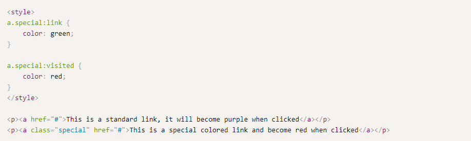
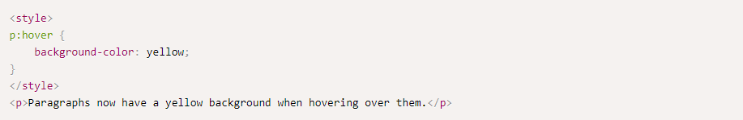
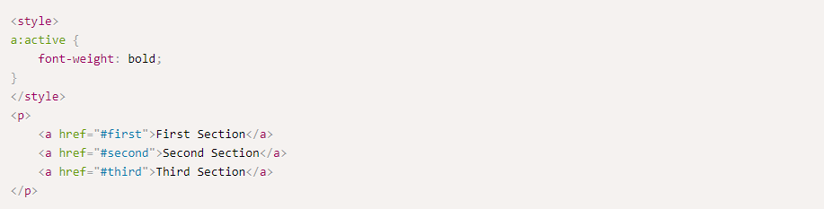
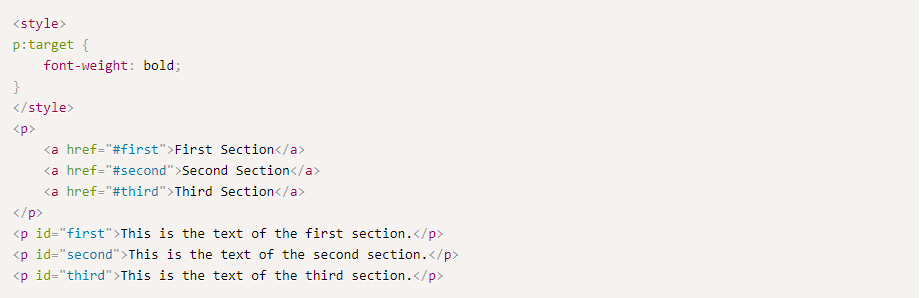
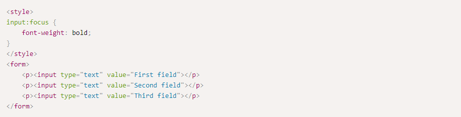

Pseudo-classes
HTML provides pseudo-classes, classes that are defined by default and allow us to apply a style on either:
Links
A link can either be in an unvisited state or a visited state. An unvisited link is a link that was not clicked on.
A visited link is a link that was clicked on.

Hover
The CSS :hover pseudo-class can be used to define styles for HTML elements which the user is hovering upon using the mouse.

Active and Target
The CSS :active pseudo-class defines the styles to use for an element which is currently being clicked.

Navigating to a specific section in the page also allows us to style the destination element.

Focus
The CSS :focus pseudo-class defines the styles to use for an element which is focused.
